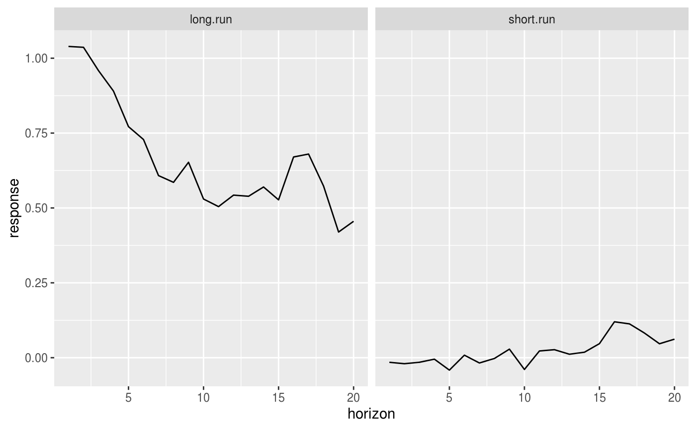

tvarGIRF is an R package that calculates generalised impulse response functions to reduced form shocks for threshold vector autoregressions estimated using the tsDyn package.
Please note: this package is something I put together quickly for an uncompleted project because the only other implementation of GIRFs in R that existed at the time looks like it implements the bootstrap incorrectly to me. According to the tsDyn wiki, GIRFs are now included in the tsDyn package, so you might have better luck with those.
Install the lastest released version of the package using the R remotes package:
You can also install the latest development version:
The library extends the R tsDyn package. The following example illustrates how to create a simple GIRF for a threshold VAR using the zeroyld dataset provided with the tsDyn package.
GIRF is given a reduced form shock - in the example below a shock to only the second variable c(0,1). It is up to you to identify shocks; tvarGIRF won’t do it for you.
## Registered S3 method overwritten by 'xts':
## method from
## as.zoo.xts zoo## Registered S3 method overwritten by 'quantmod':
## method from
## as.zoo.data.frame zoo## Registered S3 methods overwritten by 'forecast':
## method from
## fitted.fracdiff fracdiff
## residuals.fracdiff fracdifflibrary(tvarGIRF)
# Estimate an example TVAR using the zeroyld dataset included in the tsDyn package
data(zeroyld)
exampleTVAR <- TVAR(zeroyld, lag=2, nthresh=1, thDelay=1, mTh=1, plot=FALSE)## Best unique threshold 10.653# Calculate GIRFs for a reduced form shock to the second variable (long.run)
GIRF(exampleTVAR, c(0,1), H = 10, R = 10)## # GIRF of tvar exampleTVAR
## # A tibble: 20 x 2
## short.run long.run
## <dbl> <dbl>
## 1 0.0321 1.06
## 2 0.0851 0.991
## 3 0.139 1.01
## 4 0.0853 0.852
## 5 0.0822 0.737
## 6 0.103 0.725
## 7 0.0704 0.686
## 8 0.000502 0.528
## 9 -0.0574 0.280
## 10 0.00916 0.360
## 11 -0.00549 0.349
## 12 0.00379 0.363
## 13 0.0344 0.402
## 14 0.0899 0.346
## 15 0.0799 0.250
## 16 0.0891 0.317
## 17 0.0179 0.221
## 18 0.0524 0.252
## 19 0.0714 0.285
## 20 0.106 0.245NB: These GIRFs are meaningless as I have used very few repetitions to calculate them. I have done this so that the examples don’t take too long to run. But you should use much larger values for your actual estimation.
Note that you can shock more than one variable. If you had a three equation TVAR, passing shock = c(1,0,0) would give you the GIRF to a reduced-form shock to the first equation, and shock = c(1,1,0) would be a reduced form shock to both the first and second. The values need not be 1 either. You can estimate the response to a 0.9 unit shock to one variable and a 0.645 to the other (just as an example!):
## # GIRF of tvar exampleTVAR
## # A tibble: 20 x 2
## short.run long.run
## <dbl> <dbl>
## 1 0.903 0.668
## 2 0.872 0.873
## 3 0.911 0.919
## 4 0.918 0.924
## 5 0.922 0.936
## 6 0.970 1.04
## 7 0.955 1.05
## 8 1.00 1.15
## 9 1.08 1.27
## 10 1.04 1.25
## 11 1.08 1.20
## 12 1.07 1.06
## 13 1.05 1.01
## 14 0.971 0.969
## 15 0.968 0.939
## 16 0.960 0.921
## 17 0.991 0.979
## 18 1.03 1.14
## 19 1.03 1.12
## 20 1.03 1.11This is helpful, as you will typically want to identify structural shocks. The reduced form shock will be some linear combination of those structural shocks. See the section “A note on shocks” for a bit more discussion.
tvarGIRF has a couple helpful functions to help you view the results from GIRF.
The first is to simply print the results of an estimation:
saved_girfs <- GIRF(exampleTVAR, c(0,1), H = 10, R = 10)
saved_girfs # or, equivalently print(saved_girfs)## # GIRF of tvar exampleTVAR
## # A tibble: 20 x 2
## short.run long.run
## <dbl> <dbl>
## 1 -0.0154 1.04
## 2 -0.0200 1.04
## 3 -0.0153 0.959
## 4 -0.00490 0.890
## 5 -0.0415 0.771
## 6 0.00840 0.728
## 7 -0.0177 0.608
## 8 -0.00261 0.586
## 9 0.0286 0.653
## 10 -0.0394 0.530
## 11 0.0225 0.504
## 12 0.0268 0.543
## 13 0.0116 0.539
## 14 0.0183 0.570
## 15 0.0469 0.527
## 16 0.120 0.670
## 17 0.113 0.680
## 18 0.0822 0.573
## 19 0.0465 0.420
## 20 0.0618 0.455There is also a tidier for GIRFs (a la broom):
## # A tibble: 40 x 3
## horizon variable response
## <int> <chr> <dbl>
## 1 1 short.run -0.0154
## 2 2 short.run -0.0200
## 3 3 short.run -0.0153
## 4 4 short.run -0.00490
## 5 5 short.run -0.0415
## 6 6 short.run 0.00840
## 7 7 short.run -0.0177
## 8 8 short.run -0.00261
## 9 9 short.run 0.0286
## 10 10 short.run -0.0394
## # … with 30 more rowsYou can View GIRFs in the spreadsheet viewer. You can also plot your GIRFs, using a built in plot function that uses ggplot2:

(Again, these GIRFs are meaningless as I have used very few repetitions to calculate them, which is why they look so wonky. I have done this so that the examples don’t take too long to run. But you should use much larger values for your actual estimation.)
tvarGIRF does not identify shocks for you. The argument you supply to tvarGIRF is for a reduced form shock. This is rarely what you want. The reduced form shocks are extremely unlikely to be uncorrelated with one another, and so it makes little sense to consider one such isolated shock.
Instead, you will want to identify structural shocks that are uncorrelated with one another.
If you want to use structural shocks, you will have to identify the shocks yourself and supply the reduced form shock that corresponds to your chosen structural shock. It is up to you to identify shocks; tvarGIRF won’t do it for you. There are many strategies for identifying structural shocks, tvarGIRf can’t help with this.
As an example, let’s identify a structural shock for the TVAR we estimated above using timing restrictions / Cholesky decomposition. Our timing assumption is that shocks to short.run affect both variables contemparenously, but shocks to long.run affect short.run with a one period lag.1
Using our estimated TVAR, we can get the residuals by:
We calculate the covariance matrix by:
## short.run long.run
## short.run 42.70877 54.85373
## long.run 54.85373 124.82032And take an upper triangular Cholesky decomposition:
## short.run long.run
## short.run 6.535195 8.393587
## long.run 0.000000 7.373466I could then calculate the GIRF to the identified structural shock to the variable short.run by running:
Which is what my identification scheme tells me the structural shock looks like as a reduced form shock (the first row of the cholesky-decomposed covariance matrix).
The restrict.to argument takes an integer corresponding to which regime you wish to restrict the GIRF to. For instance, using the toy example we started with before, if I estimate the following TVAR:
data(zeroyld)
exampleTVAR <- TVAR(zeroyld, lag = 2, nthresh = 1, thDelay = 1, mTh = 1, plot = FALSE)## Best unique threshold 10.653I have a TVAR with two regimes. These are regimes are denoted by 1 when then threshold variable (in this case short.run) is below my estimated threshold (10.653 in this example) and denoted by 2 when it is above the threshold value. This scales to more regimes: 1 corresponds to the lowest regime and nthresh+1 to the highest regime.
You can see the names of your regimes by printing your TVAR:
## Model TVAR with 1 thresholds
##
## $Bdown
## Intercept short.run -1 long.run -1 short.run -2
## Equation short.run 0.048644738 0.9211813 0.02872384 0.05347747
## Equation long.run 0.007964404 0.1835720 0.97111008 -0.14157883
## long.run -2
## Equation short.run -0.006114365
## Equation long.run -0.015307980
##
## $Bup
## Intercept short.run -1 long.run -1 short.run -2
## Equation short.run 1.561918 1.1780904 -0.03076567 -0.3468208
## Equation long.run 2.037192 0.7989221 0.81823826 -0.8562527
## long.run -2
## Equation short.run 0.06986963
## Equation long.run 0.05771228
##
##
## Threshold value[1] "10.653"My regimes are called Bdown (the regime denoted by 1, as it appears first) and Bup (the regime denoted by 2, as it appears second).
You can also see which regime your estimated model is in at each point in your estimation sample by looking at:
## [1] NA NA 1 1 1 1 1 1 1 1 1 1 1 1 1 1 1 1 1 1 1 1 1
## [24] 1 1 1 1 1 1 1 1 1 1 1 1 1 1 1 1 1 1 1 1 1 1 1
## [47] 1 1 1 1 1 1 1 1 1 1 1 1 1 1 1 1 1 1 1 1 1 1 1
## [70] 1 1 1 1 1 1 1 1 1 1 1 1 1 1 1 1 1 1 1 1 1 1 1
## [93] 1 1 1 1 1 1 1 1 1 1 1 1 1 1 1 1 1 1 1 1 1 1 1
## [116] 1 1 1 1 1 1 1 1 1 1 1 1 1 1 1 1 1 1 1 1 1 1 1
## [139] 1 1 1 1 1 1 1 1 1 1 1 1 1 1 1 1 1 1 1 1 1 1 1
## [162] 1 1 1 1 1 1 1 1 1 1 1 1 1 1 1 1 1 1 1 1 1 1 1
## [185] 1 1 1 1 1 1 1 1 1 1 1 1 1 1 1 1 1 1 1 1 1 1 1
## [208] 1 1 1 1 1 1 1 1 1 1 1 1 1 1 1 1 1 1 1 1 1 1 1
## [231] 1 1 1 1 1 1 1 1 1 1 1 1 1 1 1 1 1 1 1 1 1 1 1
## [254] 1 1 1 1 1 1 1 1 1 1 1 1 1 1 1 1 1 1 1 1 1 1 1
## [277] 1 1 1 1 1 1 1 1 1 1 1 1 1 1 1 1 1 1 1 1 1 1 1
## [300] 1 1 1 1 1 1 1 1 1 1 1 1 1 1 1 1 1 1 1 1 1 1 1
## [323] 1 1 1 1 1 1 1 1 1 1 1 1 1 1 1 1 1 1 1 1 1 1 1
## [346] 1 1 1 1 2 2 2 2 1 1 2 2 2 2 2 2 2 2 2 2 2 2 2
## [369] 2 2 2 2 2 2 2 2 2 2 2 2 2 2 2 2 1 2 1 1 1 2 2
## [392] 2 2 2 2 2 2 2 2 2 2 2 2 2 2 2 2 2 2 2 2 2 2 1
## [415] 1 1 1 1 1 1 1 1 1 1 1 1 1 1 1 1 1 1 1 1 1 1 1
## [438] 1 1 1 1 1 1 1 1 1 1 1 1 1 1 1 1 1 1 1 1 1 1 1
## [461] 1 1 1 1 1 1 1 1 1 1 1 1 1 1 1 1 1 1 1 1 1 1And you could confirm that these correspond to short.run being above or below the estimated threshold value.
The restrict.to argument in tvarGIRF uses those regime numbers. Suppose I want to examine GIRFs conditional on starting in regime Bdown, when short.run is below my threshold. This corresponds to regime 1. So I would use restrict.to = 1 in my call to GIRF:
## # GIRF of tvar exampleTVAR
## # A tibble: 20 x 2
## short.run long.run
## <dbl> <dbl>
## 1 0.0182 1.05
## 2 0.0261 0.955
## 3 -0.0126 0.902
## 4 -0.0228 0.835
## 5 -0.00768 0.650
## 6 0.0141 0.610
## 7 0.0581 0.517
## 8 0.0750 0.426
## 9 0.148 0.458
## 10 0.170 0.447
## 11 0.203 0.487
## 12 0.238 0.556
## 13 0.212 0.490
## 14 0.247 0.512
## 15 0.286 0.565
## 16 0.313 0.599
## 17 0.317 0.591
## 18 0.325 0.512
## 19 0.367 0.580
## 20 0.342 0.557(NB: Again, I am using far too few repetitions to calculate meaningful GIRFs, but I don’t want the examples to take too long.)
This is not a very sensible assumption in this context and is meant purely to illustrate how you might go about this identification strategy using tvarGIRF. There are many problems with the identification strategy I use here, including that I assume that the impact of the structural shocks is the same in both regimes.↩